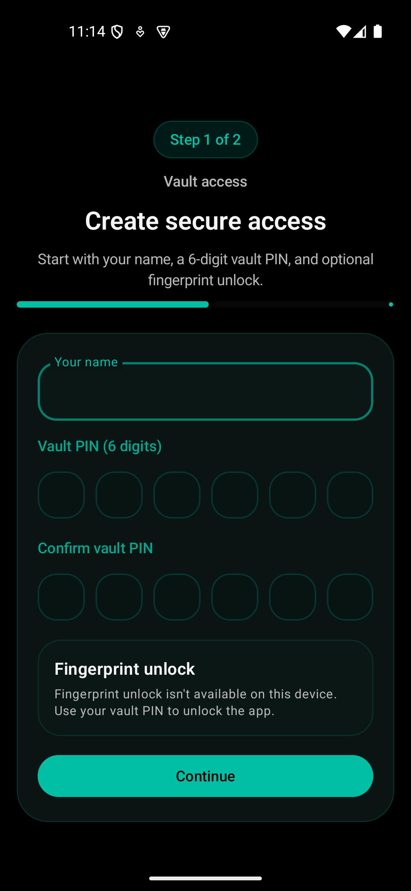
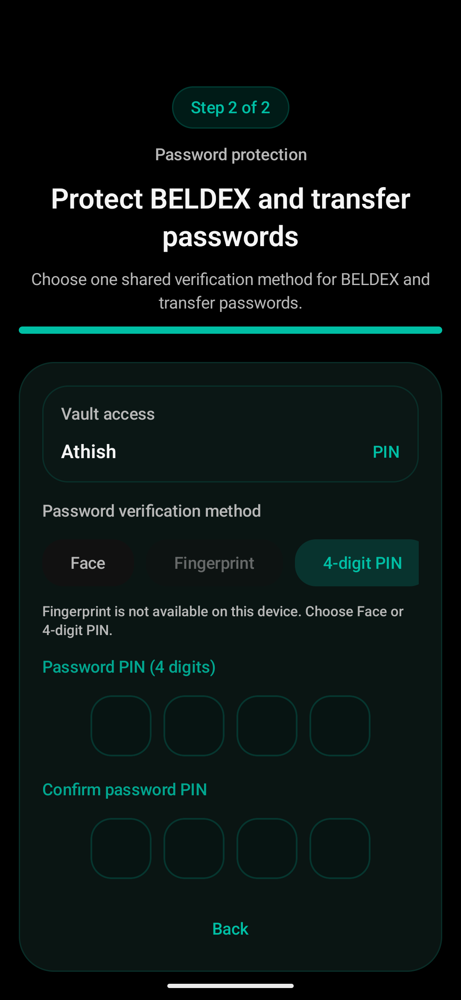
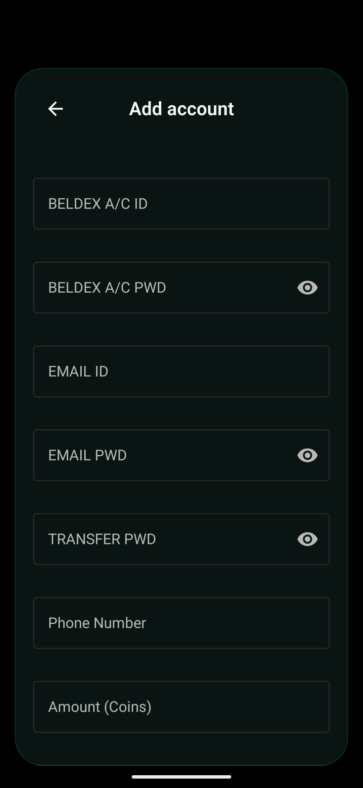

Two-step setup
Create vault access first, then choose how BELDEX and transfer passwords should be protected.
BELDEX Vault
Secure BELDEX account vault
Secure setup, protected passwords, fast retrieval
BELDEX Vault guides users through secure access setup, protects BELDEX and transfer passwords, and keeps records, reminders, and live prices easy to reach from one mobile-first home screen.

Access setup first, then shared password protection.
Search, refresh prices, and open protected account details quickly.
Live prices, currency conversion, reminders, profile, security, and help stay close to the main dashboard.
At a glance
Create vault access first, then choose how BELDEX and transfer passwords should be protected.
Store BELDEX account ID, BELDEX password, transfer password, email, phone number, and coin amount in one place.
Use the Home dashboard for quick access and Contacts for retrieval and browsing when saved records grow over time.
Refresh market prices, open the currency converter, manage reminders, and reach profile, security, and help from the same home-first flow.
Why this app exists
Users create app access first, then choose how BELDEX and transfer passwords should be verified.
Account details stay organized under Home and Contacts, with focused overlays for viewing and quick actions.
Live market pricing, reminders, and search make the vault feel practical instead of buried and static.
Daily utility layer
The Home screen shows BDX and USDT pricing with a one-tap refresh so users can reopen the app and immediately see useful context.
The currency converter, reminders, profile, security, and help surfaces stay close to the main dashboard instead of being buried in settings.
The centered add action keeps account creation reachable from the primary navigation, which helps first-time users move forward quickly.
Users can reopen the app and immediately see BDX to USDT, BDX to INR, and USDT to INR values with manual refresh on demand.
The calculator utility converts between BDX, USDT, and INR using the latest pricing context already visible on Home.
The bell keeps revisit-worthy accounts easy to reopen later without deleting or losing the core record.
Users can review their display name and last-login context without leaving the main app flow.
Vault access and password protection stay configurable through dedicated security controls instead of hidden system menus.
Help & info explains live prices, password protection, reminders, and daily-use behavior in the app’s own context.
How it works
Step 1
Users enter their name, choose a vault PIN, and set the foundation for secure app access before anything else begins.

Screens across the product


Core functionality
Users complete vault access first, then finish password protection on a focused second page.
Entering the vault is separate from revealing BELDEX and transfer passwords, which keeps sensitive actions deliberate.
Save account details, return to Home quickly, and move into Contacts without losing the main navigation context.
Keep BELDEX price context visible on Home while still handling reminders, profile, security, and utility overlays.
Detailed understanding
Users create secure vault access with their name and a 6-digit vault PIN, then move to a separate password-protection step so setup stays easy to understand.
BELDEX and transfer passwords share one verification method, with support for Face, Fingerprint when available, or a 4-digit password PIN.
The add-account flow captures BELDEX credentials, transfer password, email details, phone number, and coin amount in a structured form instead of scattered notes.
Home gives a quick dashboard view, while Contacts supports browsing and retrieving stored account records when the vault grows.
The product includes refreshable market prices on Home, a currency converter entry point, reminders, and shortcut access to profile, security, and help flows.
Entering the app is separate from revealing protected password data, which helps keep sensitive actions deliberate while still making daily retrieval fast.
Designed for daily confidence
BELDEX Vault keeps account access, password protection, live price context, reminders, and everyday retrieval in one calm experience that stays readable on phones and larger screens.